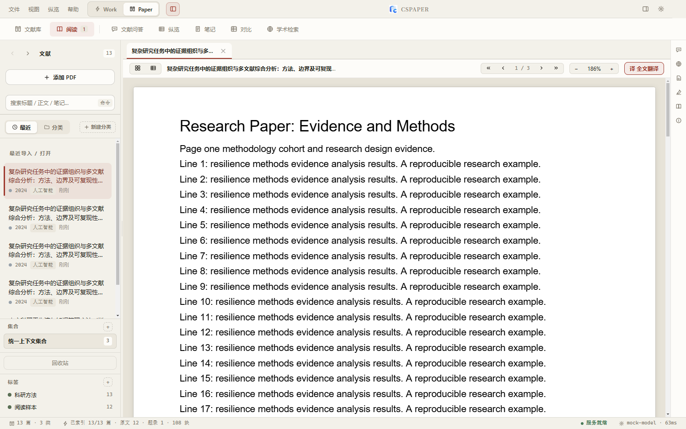
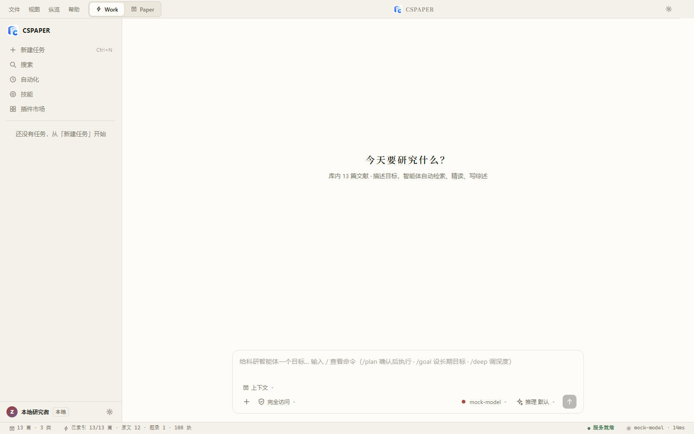
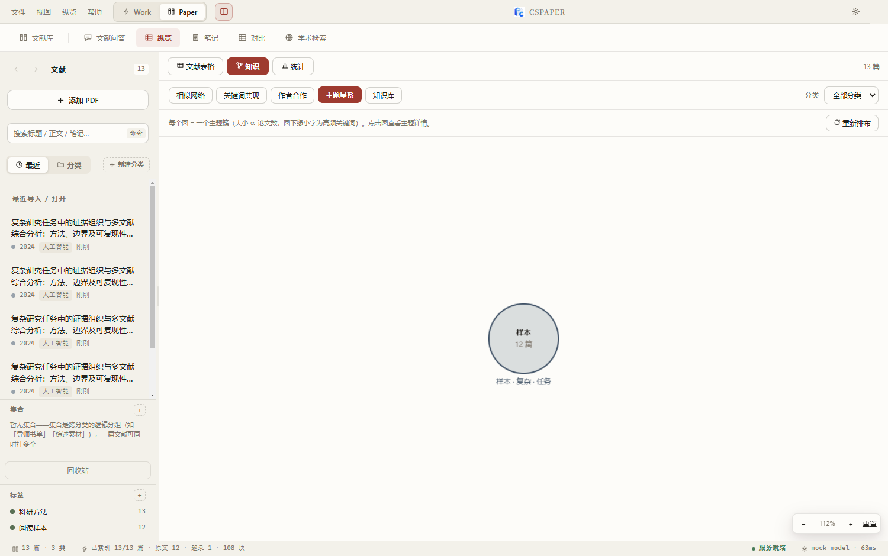
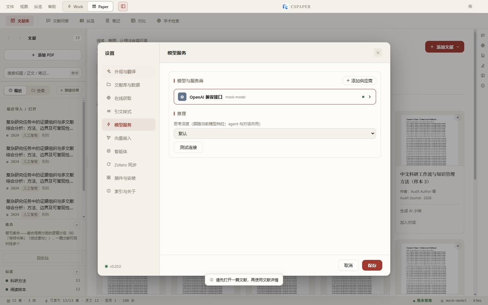

📖
沉浸 PDF 阅读
多标签、缩略图、目录、页内查找、续读记忆、高亮与批注；划词即可翻译、解释或加入统一对话。
CSPAPER 不只是 PDF 阅读器，而是把阅读、证据、写作与 Agent 产物连接在同一个本地数据模型里。
多标签、缩略图、目录、页内查找、续读记忆、高亮与批注；划词即可翻译、解释或加入统一对话。
读文献专属番茄钟、短/长休息、喝水与活动提醒；离开阅读自动暂停，专注流水进入今日汇总。
当天安排、临近截止、最近会话、可继续阅读 PDF 与真实专注数据；科研日历支持月 / 周 / 日 / 议程和重复日程。
本地向量 + BM25 混合检索，回答引用绑定 Source；点击角标回到 第 N 页 + 精确文本。
Zotero 无 PDF 条目明确显示“题录 · 无原文”。模型只能基于元数据回答，不会假装读过全文；可探测 OpenAlex OA 原文，确认后安全升级。
三篇或多篇文献按研究问题、方法、数据、结果、局限自动对比，页码出处可回跳并导出 MD/CSV。
相似网络、关键词共现、作者合作、主题星系与知识库；支持滚轮缩放和画布平移。
本地 Zotero 迁移、标签/笔记/标注、OpenAlex、DOI/arXiv、知网与万方题录导入。
Agent 写入前审批；文件操作带日志、摘要与备份，崩溃后进入 rollback / needs review 的明确状态。
多服务商、同模型名精确绑定；思考等级跟随模型能力，支持 minimal / xhigh / max / 自定义档位。
笔记模板、思维导图、GB/T 7714 与万种 CSL、Word/WPS 引文助手、BibTeX 导出。
Work 不只是聊天：模型先给出计划，用户确认后执行工具，所有运行事件、来源和产物持久保存；今日台与科研日历把研究安排接到真实阅读和会话。
统一的品牌系统、可拖拽分栏、模型能力控制、深浅主题与窄窗布局。




本机完成源码、打包应用、安装器生命周期、强制崩溃恢复与真实模型链路验证。
最新证据目录：design-plans/work-upgrade-2026-10-29/；发布基线证据：design-plans/execution-review-2026-10-29/。CI 与安装器发布由 GitHub Actions 自动执行。
安装包由 GitHub Actions 构建并附加到 Release；也可以克隆仓库自行构建。